O aplicativo que recomendo para ler livros é o Hoshi Reader. Ele é um leitor de e-books que permite a consulta de dicionário sem interromper a leitura. Aqui, será mostrado como instalar para dispositivos Android, mas é parecido para outros dispositivos.
No Android, ao abrir o APK baixado, o sistema pode avisar que o aplicativo de origem (por exemplo, o Firefox) não tem permissão para instalar apps desconhecidos. Toque em Configurações, ative a permissão para esse aplicativo e volte para instalar.
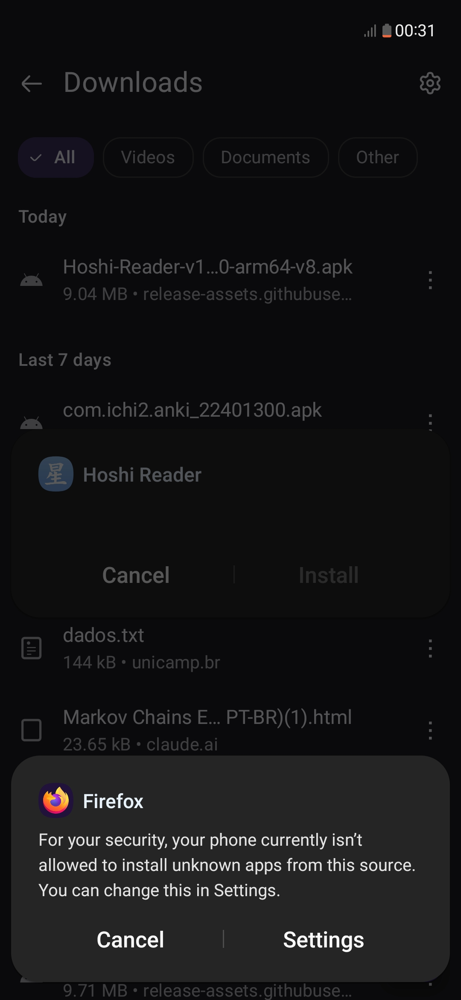
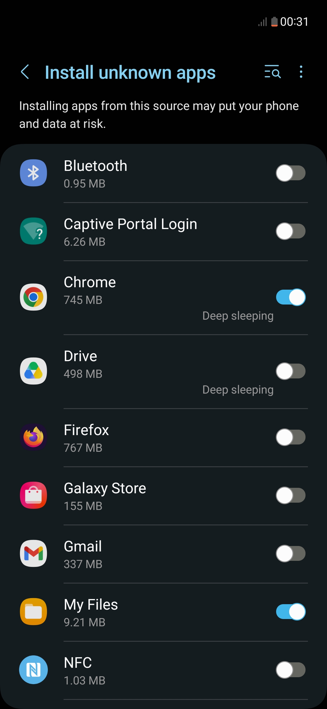
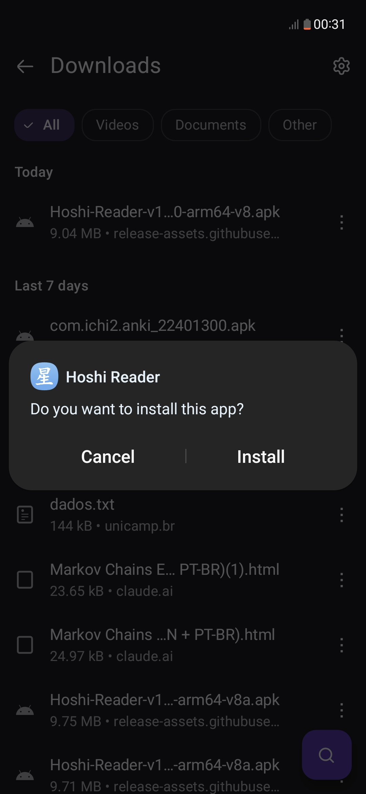
No Hoshi Reader, abra Settings → Dictionaries.
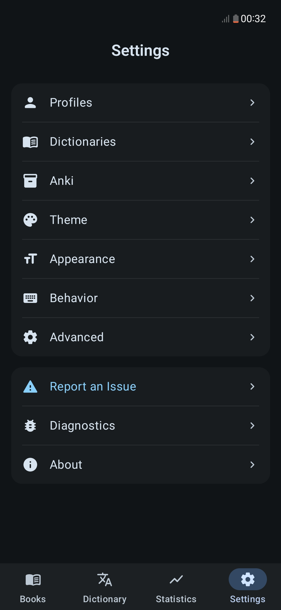
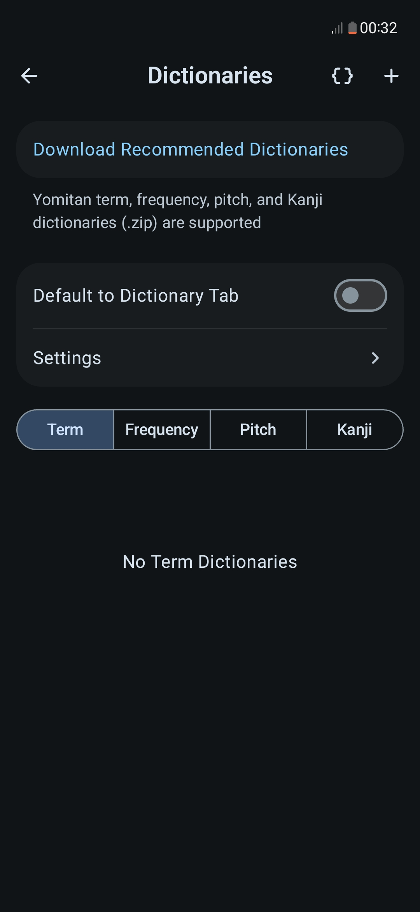
Depois, toque em Download Recommended Dictionaries e baixe os dois seguintes:
O dicionário de frequência é necessário para que as leituras mais comuns apareçam antes das raras.
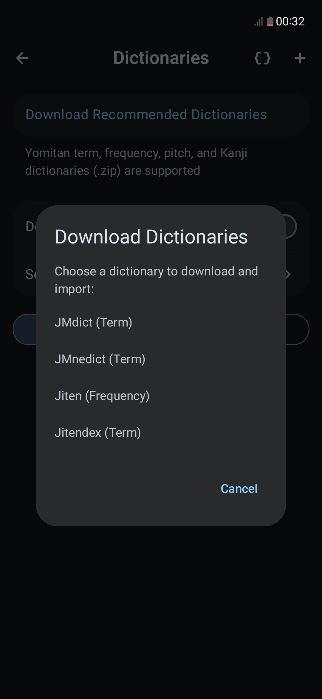
O livro precisa estar no formato .epub. Na aba Books, toque em Import EPUB (ou no botão +) e escolha o arquivo.
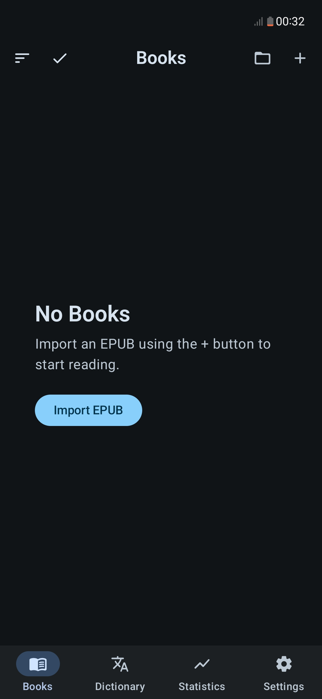
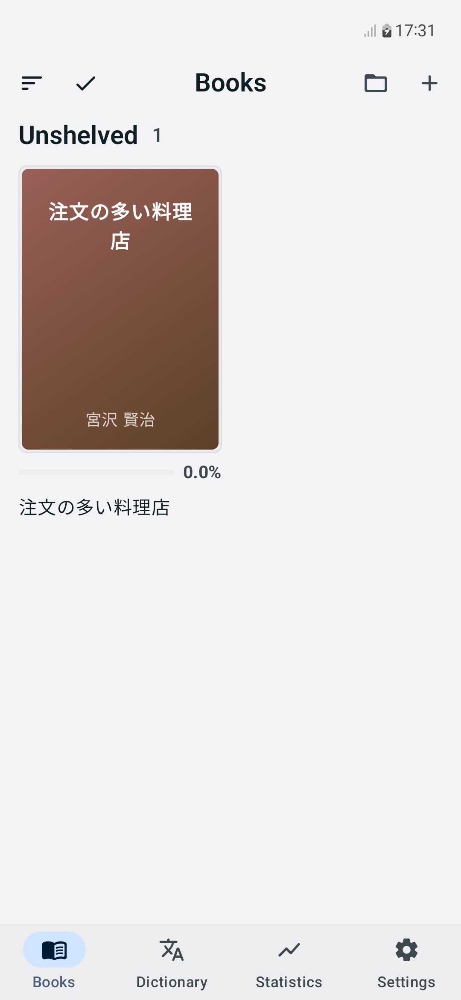
Para consultar uma palavra durante a leitura, basta tocar nela. O dicionário aparece ao lado da palavra.
Na versão para computador, é necessário apertar a tecla Shift para consultar uma palavra.
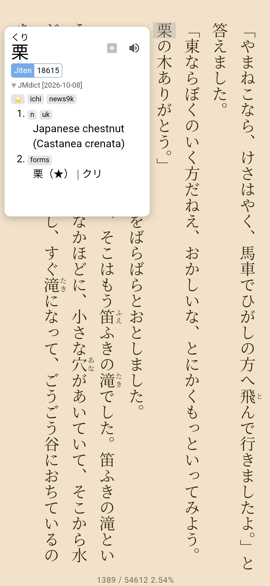
Também é possível exportar frases e palavras dos livros para o Anki.
É possível instalar uma extensão de lookup, como o Yomitan. Aqui, será mostrado como configurar o Yomitan no Android. Ele possibilita ver o dicionário ao clicar em qualquer palavra, sem sair da página.
No Firefox, acesse a página da extensão. Toque em Adicionar ao Firefox e confirme as permissões.
Essa extensão funciona tanto no computador quanto em celulares Android. O iOS não é suportado.
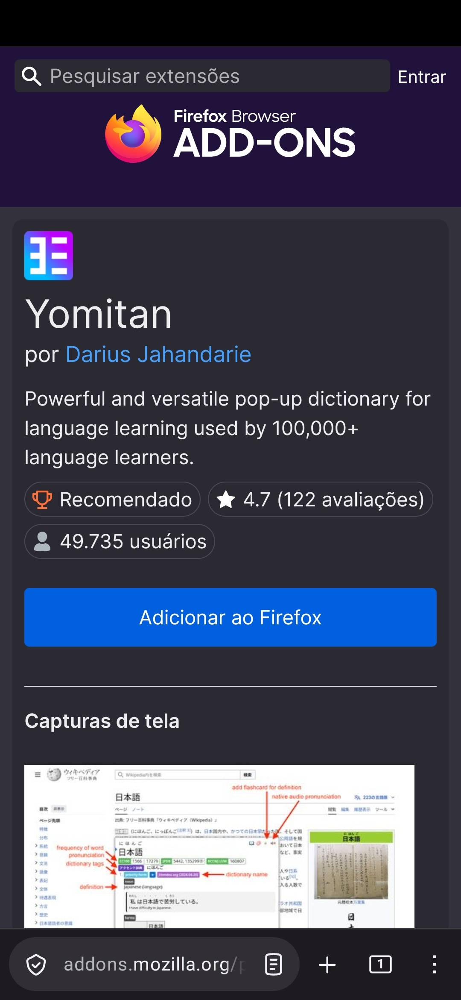
Toque no menu de três pontos e abra Extensions → Yomitan → Settings.
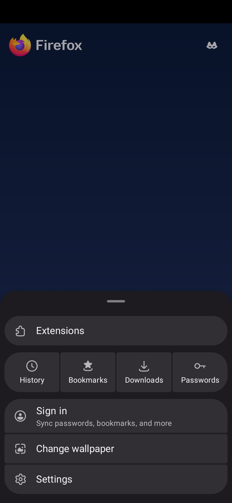
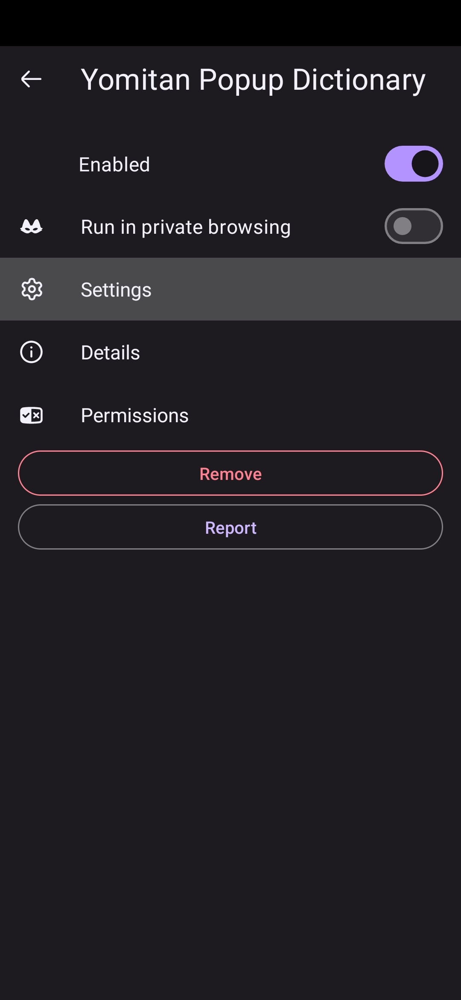
Toque em Get recommended dictionaries e baixe os seguintes:
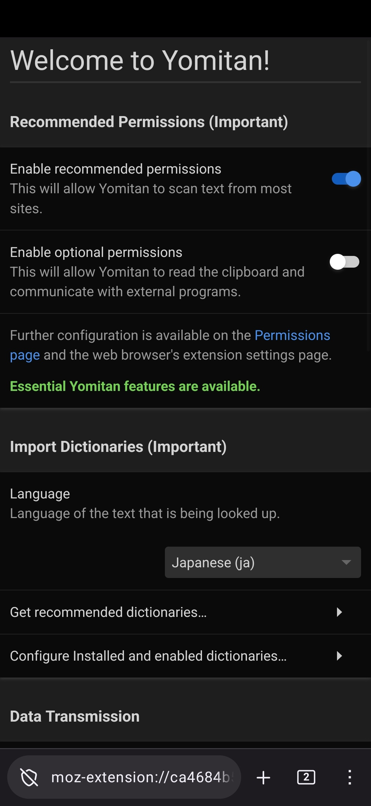
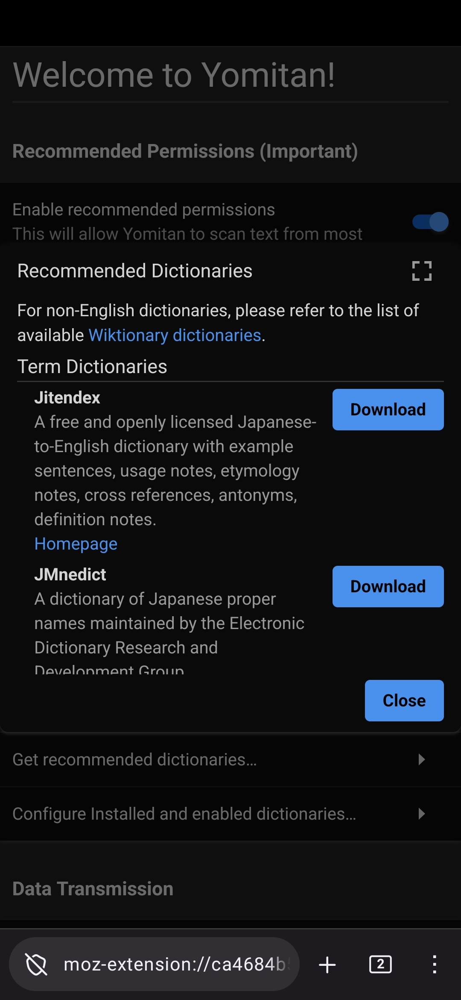
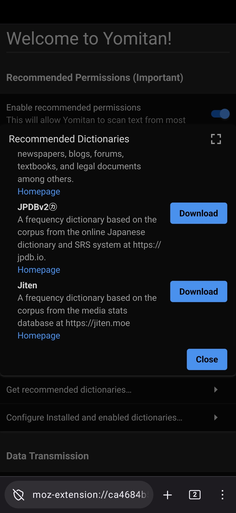
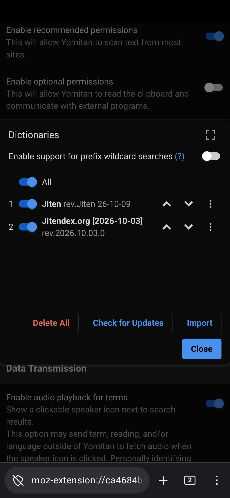
Algumas coisas para ler:
Disponível na Play Store, é bom pra conseguir consultar palavras em fotos (ou mangas).
Sites com alguns mangas gratuitos: